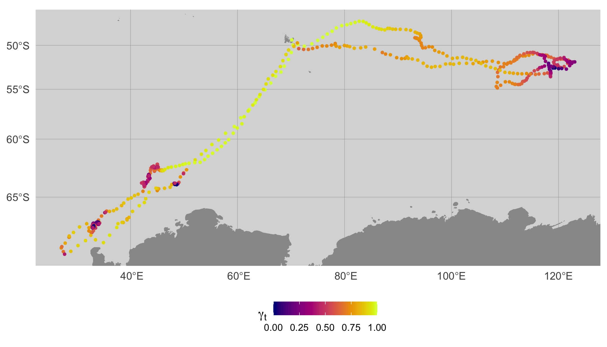
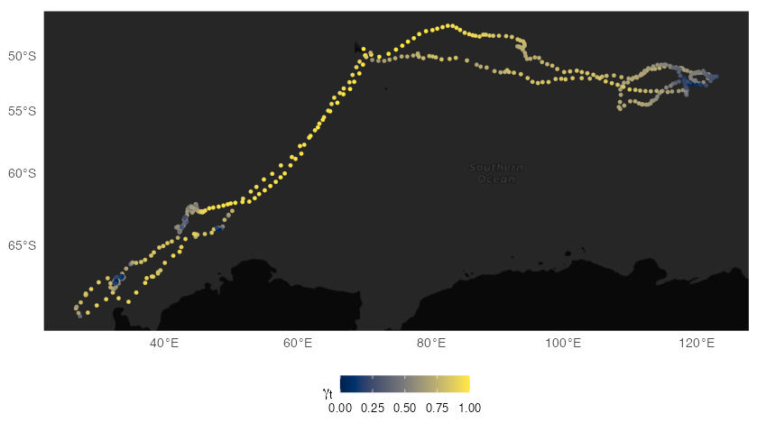
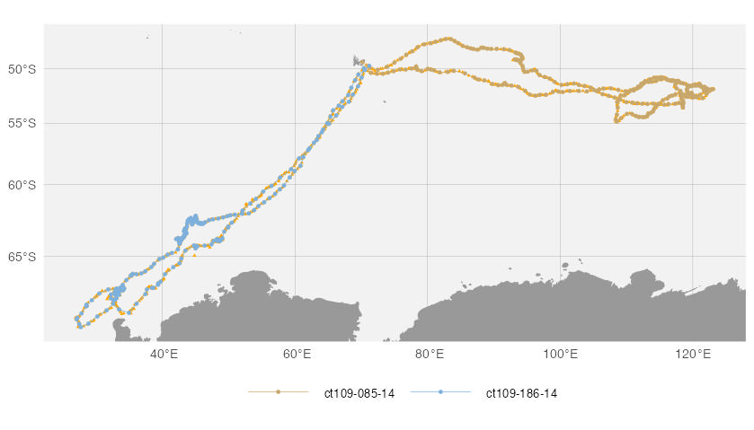
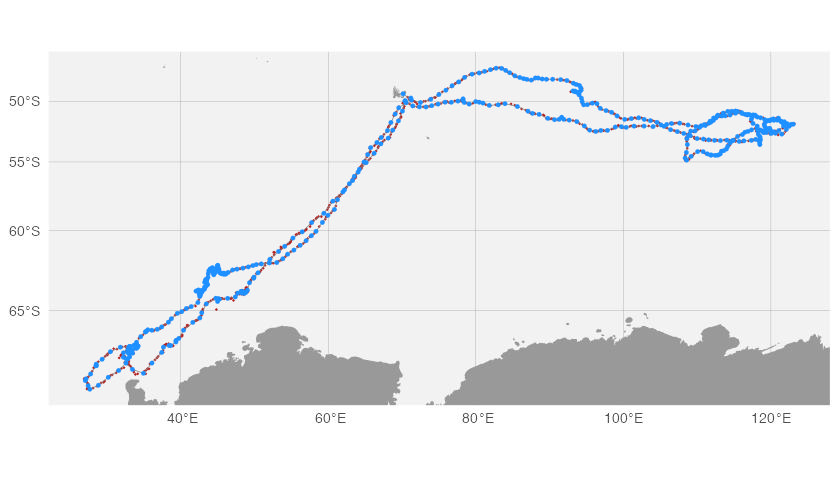
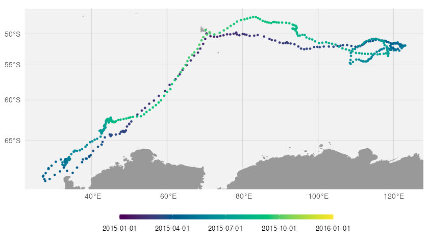
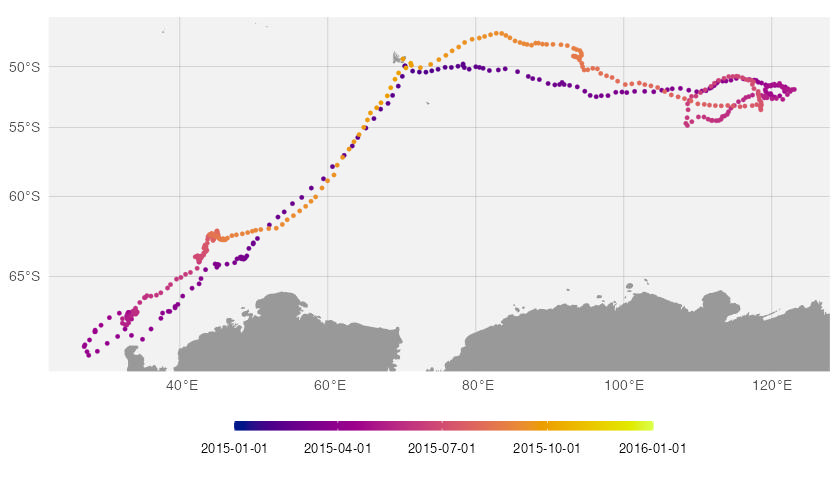
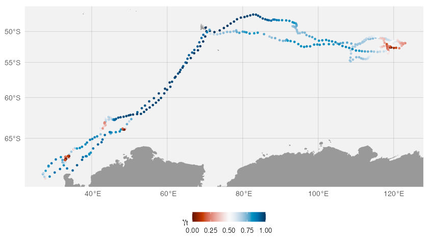
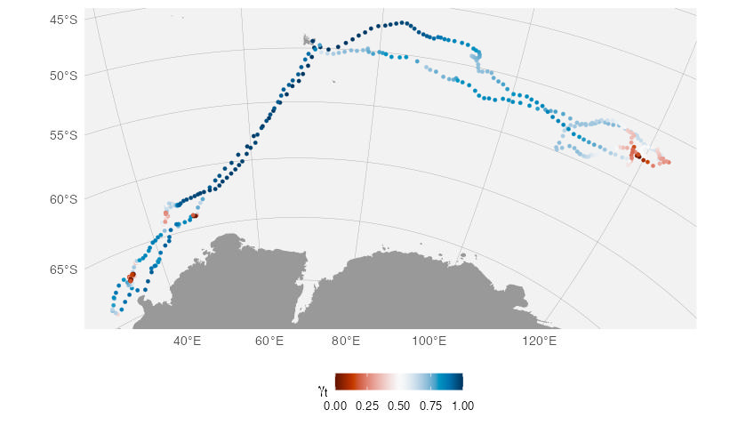

map()
aniMotum provides a flexible map function
for mapping SSM-estimated tracks along with options for including their
confidence ellipses, observed locations, track lines, and behavioural
estimates. Default choices are made based on the model fit object being
mapped but these can be overridden via the aes argument and
the aes_lst() function.
se2 <- subset(sese, id %in% unique(id)[1:2])
fit <- fit_ssm(se2,
model = "mp",
time.step = 24,
control = ssm_control(verbose = 0))
map(fit, what = "predicted")
Here, SSM-predicted locations are coloured by the estimated move
persistence index (\(\gamma_t\)). To
aid visualisation of high and low move persistence regions along each
track, the \(\gamma_t\) estimates are
normalised separately for each track to span the interval 0,1. This can
be turned off with normalise = FALSE, or applied to the
group of tracks with group = TRUE.
By default, map() will try to use
rnaturalearth::ne_countries(scale = 10) high-resolution
land polygon data if the rnaturalearthhires data package is
installed. If not, the default will be dropped to the coarser
scale=50. The rnaturalearthhires package can
be installed via:
install.packages("rnaturalearthhires", repos = "https://ropensci.r-universe.dev")
or remotes::install_github("ropensci/rnaturalearthhires").
Alternatively, if the ggpstial and rosm
packages are installed, users may specify any of the available tile map
layers returned by rosm::osm.types() via the
map_type argument. When specifying a map_type,
map will take any additional arguments to
ggspatial::annotation_map_tile() for finer control;
zoom and progress are used here.
map(fit, what = "predicted", map_type = "cartodark", zoom = 4, progress = "none")
We can add and remove certain track components by using the
aes argument and aes_lst() function. Here, the
observed locations (orange triangles) and track lines have been turned
on and the move persistence index has been turned off.

Note that when turning off the move persistence index, tracks are
automatically given unique colours. This can be turned off by using
by.id = FALSE.
Additional control over mapping aesthetics can be gained by viewing
and editing the my.aes$df data.frame created by
aes_lst(). We can subset components and assign new values
as needed, here we change the observation colour and shape from orange
triangles to firebrick diamonds. We also set by.id = FALSE
so all tracks are displayed in a unique colour (default is
“dodgerblue”).
my.aes$df
my.aes$df$col[4] <- "firebrick"
my.aes$df$shape[4] <- 18
map(fit,
what = "p",
aes = my.aes,
by.id = FALSE)
Alternatively, we can colour estimated locations by their date to better see how tracks evolve over time.

If you don’t like the default colour palettes, these can be changed
by modifying the default aes object. Here, the
hcl.colors() function is used to specify a new colour
palette for displaying date-along-track.
map(fit,
what = "p",
aes = aes_lst(mp=FALSE,
conf=FALSE,
date_pal = hcl.colors(n=100, "Plasma")),
by.date = TRUE, by.id=FALSE)
And similarly for displaying move persistence.
map(fit,
what = "p",
aes = aes_lst(mp_pal = hcl.colors(n=100, "RdBu")))
Often choosing an appropriate map projection can provide a more
meaningful view of the tracks, especially for animals that make very
broad-scale movements, such as the southern elephant seals displayed
here. This can be done easily by providing a valid
proj4string for the Coordinate Reference System. Here, we
project the tracks onto a polar stereographic grid with longitude
centered on 68o East, Iles Kerguelen.
map(fit,
what = "p",
aes = aes_lst(mp_pal = hcl.colors(n=100, "RdBu")),
crs = "+proj=stere +lon_0=68 +datum=WGS84 +units=km")